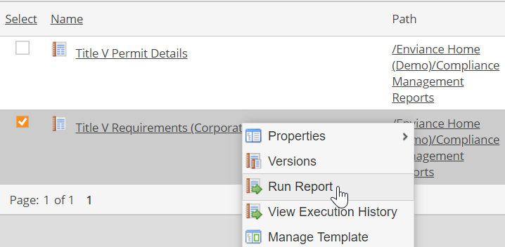
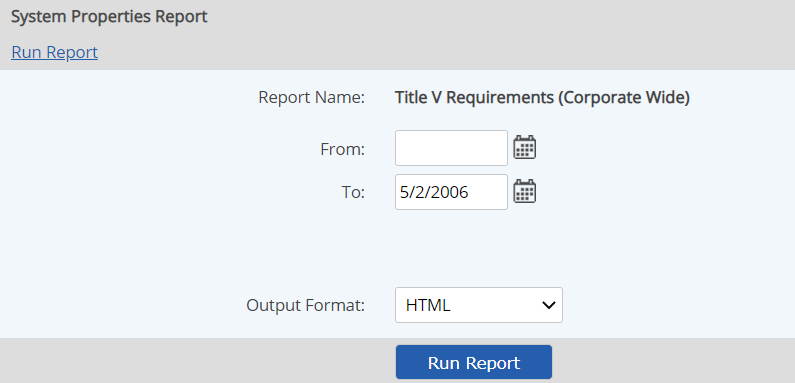

You can run most pre-configured reports in the report library simply by selecting the dates to include and the output format.
To access and run reports, you must have permissions on the report. Only View permissions are needed to run a report. To change report criteria, Edit permissions are required.
To run a report:
Right click the report in the report list and choose Run Report.

A new window opens in which you can select the criteria for the report.

Define the dates for the data to include in the report with the Date From and Date To fields.
When no hour is specified with the date, the time defaults to 12:00:00 AM (00:00:00) on the specified date.
The report type determines which fields are filtered by the date range. For example, a System Properties Report filters on Active and Inactive dates of system objects, while a Task Report filters on Task Due Date. See the sections for each report type for more information.
Additional options may be available, depending on the type of report.
If an object selection box is available, you may select the locations for which you want to run the report. Click Add, then browse or search to select the objects to include.
If no object is selected, the report output will include only the objects saved in the report definition.
Select the desired Output Format. The default format of choice (set up by the report creator) is pre-selected, but you may choose another format if desired.
HTML: View the output directly in the Web browser.
Excel: Export the data in Excel format. You may choose to view the file directly, or save the file to your computer.
Excel Template: Choose this format to output your data to a custom Excel template format. If no custom template is associated with the report, the output will be raw, unformatted data.
Select Run Report.
A progress screen will be displayed. Reports are run asynchronously and may be queued for processing, depending on system activity. If processing time exceeds a certain threshold, the processing screen will inform you that the report is still processing. You can minimize or close the screen and continue working. You can check the status of the report processing in the Report Command Log.
If HTML output format is chosen, the report will display directly in the web browser. After viewing the report output, you may close the browser window. Use the browser print option to print the report.
If Excel or Excel Template format is chosen, a dialog appears in which you can choose either to view the file directly or save it to your computer. It is recommended that you choose the Save option. After downloading the file, you may open the report in Excel. (If you choose to view the file directly, it will open in the browser, where only limited Excel functions are available.)
See Standard Report Types: Descriptions and Examples for more information about the different types of reports and options available.